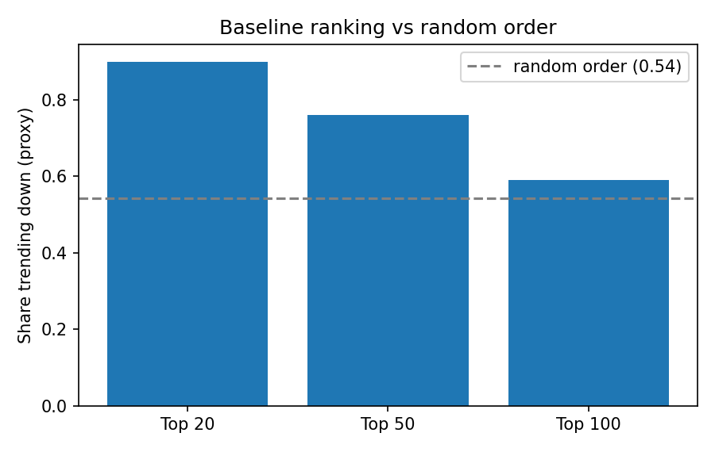
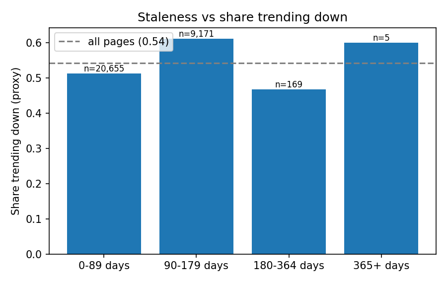
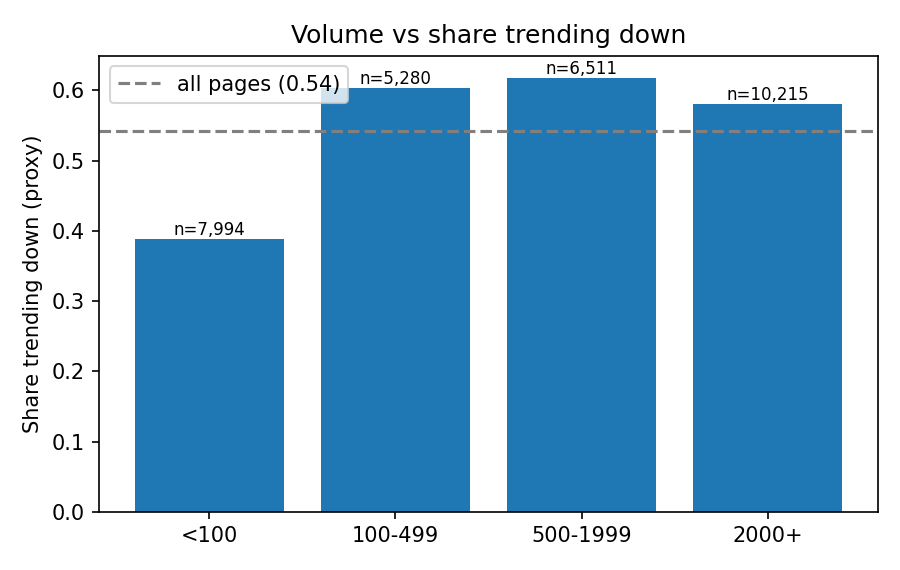

Which Pages Should a Content Team Review First? A Transparent Baseline for Refresh Prioritisation
Abstract
A content team can usually review only 20 to 50 pages per cycle, so the question is which already-published pages with real search demand should come first. I built one transparent rule, the “stale visible page” (no update for 180 days or more and at least 500 impressions in 90 days), and turned it into a score with a reason code and an action label for 30,000 anonymised pages from 32 clients. Against a proxy outcome (the page’s trend bucket is “down”), the top 20 pages were “down” 90% of the time against 54% for random order, but the advantage faded to 76% at the top 50 and 59% at the top 100. Two checks of the rule’s assumptions, staleness and volume, both came back MIXED, and only 17 pages meet the rule. I trained no model, the outcome is a proxy and the data is observational, so the results are directional decision-support, not proof that any edit would help.
1. Introduction and problem statement
Search teams hold far more published pages than they can reread. Someone has to decide which pages to open first, and that decision is usually made with hand-written rules and thresholds. This project asks a plain question: can a small, explainable rule built only from observable signals put the more promising pages at the top of a review queue, and is it any better than picking pages at random?
The decision this work supports is: which pages should a reviewer look at first, and what should they do about each one (refresh the content, rewrite the title and meta description, or keep monitoring). A high rank means “review this first”. It does not mean “this page will recover if edited”.
The rule is a baseline. It is deliberately simple so that a later model, if one is built, has an honest reference to beat.
2. Data
I used the small anonymised starter dataset of the FlyRank ML Internship (data/raw/content_refresh_anonymized.csv). I did not use the larger warehouse release for this paper.
- Unit of analysis: one row is one content page (
content_id) within a client, measured over a 90-day window. - Size: 30,000 pages from 32 clients. All 30,000 pass the starter eligibility rule (
impressions_90d > 0andcontent_age_days ≥ 90), with one row per page. - Signals used by the score:
impressions_90d(visibility) anddays_since_last_update(staleness). - Signals used only for review notes: average position and 90-day sessions.
- Proxy outcome, used only to evaluate:
trend_directionequal to “down”.
What I excluded, and why:
- Product decision flags and combined scores. They are not part of this dataset, and I never rebuilt them as inputs, because feeding a model the product’s own answer produces a circular result.
- Any future-window column. The score uses none.
- The sparse AI-session fields. There are too few positive examples to support any claim.
- Client names, domains, URLs, raw queries and page text. None are in the data, and none appear here. Pages are shown only by pseudonymised IDs.
3. Methodology
Assumptions
The rule rests on two assumptions that I test rather than take for granted: (1) a page that has not been updated for a long time is more likely to be losing visibility, and (2) pages with more impressions have more at stake and less noisy trends.
The baseline rule
A page is a stale_visible_page when days_since_last_update is at least 180 and impressions_90d is at least 500. Flagged pages get the reason code stale_visible_page and the action REFRESH_REVIEW. All other pages get no_flag and MONITOR.
The score and the queue
Score = 100 × (0.5 × percentile of impressions + 0.5 × percentile of days since last update). The queue lists flagged pages first, then everything else, and each group is sorted by score. Ranks 1 to 17 are therefore the flagged pages. From rank 18 on, order comes from the score alone.
Label and validation design
The proxy outcome is a bucket computed from the current window, not a future result, so every number below is directional. I trained no model, so there is no train and test split. Instead I evaluate the fixed rule in two ways: (a) the share of “down” pages among the top K ranked pages compared with the share across all pages, which is what random order would give, and (b) two bucket tables, one per signal, with the number of pages in each bucket. Each signal gets a one-word verdict. CONFIRMED means the “down” share rises as the signal rises, OPPOSITE means it falls, MIXED means it goes up and down, and FALSE means it is flat. Buckets with fewer than 30 pages are ignored for the verdict.
Leakage checks
The score uses only two observable columns. The code checks the score’s input list against a list of forbidden names (labels, product scores, future-window fields) and stops if one appears. The outcome column is created after the score is built and is used only to evaluate it.
4. Results
The baseline ranking against random order
Across all 30,000 pages, 54.2% have a “down” trend. That is what random order would return at any K.
| Ranking | Top 20 | Top 50 | Top 100 |
|---|---|---|---|
| Random order (reference) | 0.542 | 0.542 | 0.542 |
| Baseline rule | 0.90 (18 of 20) | 0.76 (38 of 50) | 0.59 (59 of 100) |
| Lift over random | 1.66× | 1.40× | 1.09× |

The rule flags only 17 pages. Among them 94.1% trend “down”, against 54.2% among the 29,983 unflagged pages. The top of the queue is strong because it is made of those 17 pages. After rank 17, the queue is ordered by score alone, and the lift fades quickly.
Do the rule’s two assumptions hold?
| Days since last update | Pages (n) | Share down |
|---|---|---|
| 0 to 89 | 20,655 | 0.512 |
| 90 to 179 | 9,171 | 0.611 |
| 180 to 364 | 169 | 0.467 |
| 365 or more | 5 | 0.600 (too few pages to judge) |

| Impressions (90 days) | Pages (n) | Share down |
|---|---|---|
| Under 100 | 7,994 | 0.389 |
| 100 to 499 | 5,280 | 0.604 |
| 500 to 1,999 | 6,511 | 0.618 |
| 2,000 or more | 10,215 | 0.581 |

What I take from this
- The rule’s top picks were “down” more often than random order, so the rule is a usable first filter. Its value is concentrated in a very small group.
- The staleness half of the rule is the weak part. Because so few pages are older than 180 days, the 180-day cut-off touches almost nothing, and the older buckets do not show a higher “down” share.
- A clearly explained negative result is still a result. It tells the next step what to change: test other thresholds for staleness, and consider position and engagement signals.
5. Limitations and honest framing
- The outcome is a proxy.
trend_directionis a bucket from the current window, not a future outcome. A “down” page can also reflect seasonality, consolidation into a sibling page, or noise rather than a lasting decline. - No model was trained. I cannot say whether a learned ranking would beat this baseline. The numbers here are a reference point only.
- Very few pages are flagged. Only 17 of 30,000 pages meet the rule, so the top-20 and top-50 figures rest on small groups and are uncertain.
- The data is observational. I ran no experiment, so I make no claim that refreshing a page causes recovery, and I make no claim about how any search engine works.
- Thresholds are policy choices. The 180-day and 500-impression cut-offs are mine. Different cut-offs would produce a different queue.
- Small, anonymised slice. The findings come from 30,000 pages and 32 clients. They need to be re-tested before being applied elsewhere.
6. Ranked recommendations
These are the top 10 pages of the baseline queue, shown by pseudonymised ID. The last column uses only observable signals (position and sessions), never the outcome. All ten carry the reason code stale_visible_page and the action REFRESH_REVIEW.
| Rank | Page ID | Impressions (90 days) | Days since update | What would make this pick wrong |
|---|---|---|---|---|
| 1 | content_cf56e2e2e282 | 61,678 | 194 | Topic may be evergreen or seasonal; check whether a sibling page absorbed the demand. |
| 2 | content_7368877ea310 | 59,472 | 194 | Ranks beyond page two, so age may not be the real problem (relevance or intent). |
| 3 | content_1bfaa38ff26c | 25,715 | 194 | Ranks beyond page two, so age may not be the real problem (relevance or intent). |
| 4 | content_0a91db491d14 | 13,299 | 193 | Topic may be evergreen or seasonal; check whether a sibling page absorbed the demand. |
| 5 | content_5feee3994adb | 7,812 | 194 | Ranks beyond page two, so age may not be the real problem (relevance or intent). |
| 6 | content_c2d929d83eaa | 7,558 | 193 | Topic may be evergreen or seasonal; check whether a sibling page absorbed the demand. |
| 7 | content_b16bd7307b39 | 4,590 | 194 | Ranks beyond page two, so age may not be the real problem (relevance or intent). |
| 8 | content_fe16a55cd13d | 4,556 | 194 | Topic may be evergreen or seasonal; check whether a sibling page absorbed the demand. |
| 9 | content_ecb6215e79fd | 4,429 | 194 | Ranks beyond page two, so age may not be the real problem (relevance or intent). |
| 10 | content_928af3e22c80 | 1,697 | 193 | Very few sessions, so the engagement evidence is thin. |
Action playbook
stale_visible_pageleads toREFRESH_REVIEW. Open the page and check position first. Five of the top ten rank beyond page two, where age may not be the real problem, and a refresh is less likely to be the right action. If the content is outdated and the page sits within reach of page one, decide between a content refresh, a title and meta rewrite, or monitoring.- Check for look-alikes before editing. A drop can come from seasonality, a sibling page absorbing the demand, or noise.
no_flagleads toMONITOR. No action now.
7. Reproducibility
The full work is in the public repository: github.com/ishkaklotar03/ML-Internship. The notebooks are in work/notebooks/. They cover the research question, the ML task framing, the data contract, the baseline score and this capstone (capstone.ipynb).
To reproduce the results, open capstone.ipynb in Google Colab and choose Runtime, then Run all. The notebook loads the starter file from the repository, rebuilds the score and the queue, recomputes every table above and regenerates the three charts.
8. Acknowledgements and data credit
Built on the FlyRank ML Internship dataset, provided by FlyRank. Thank you to the programme mentors for the guidance and the weekly sessions.